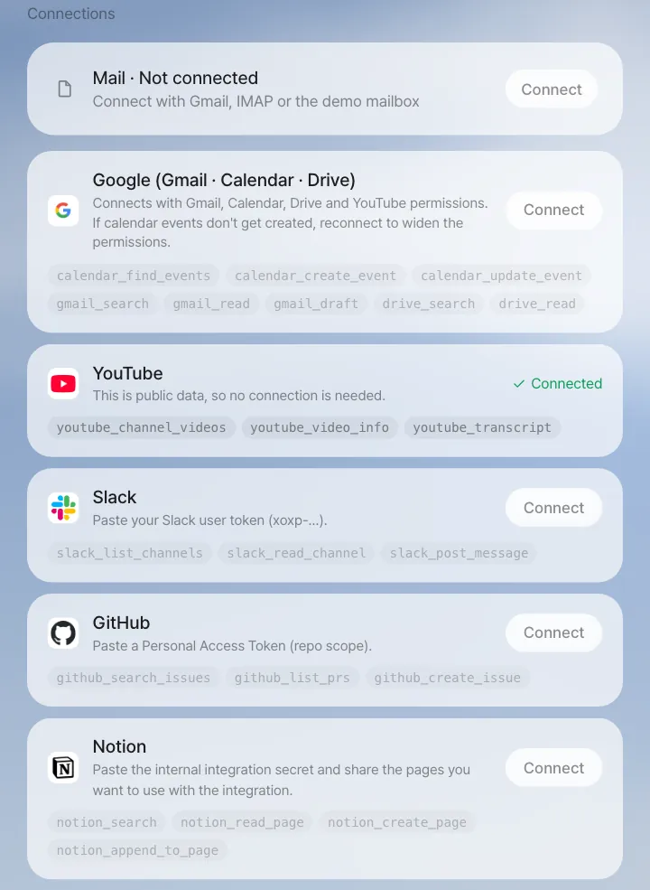
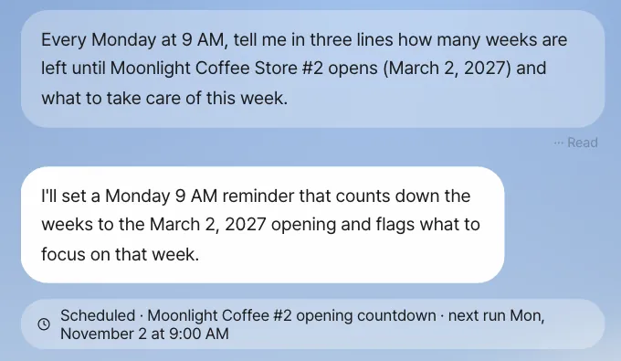
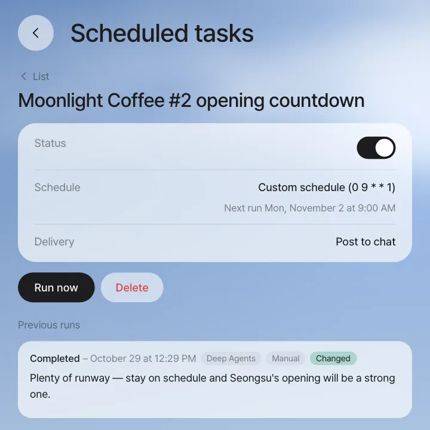
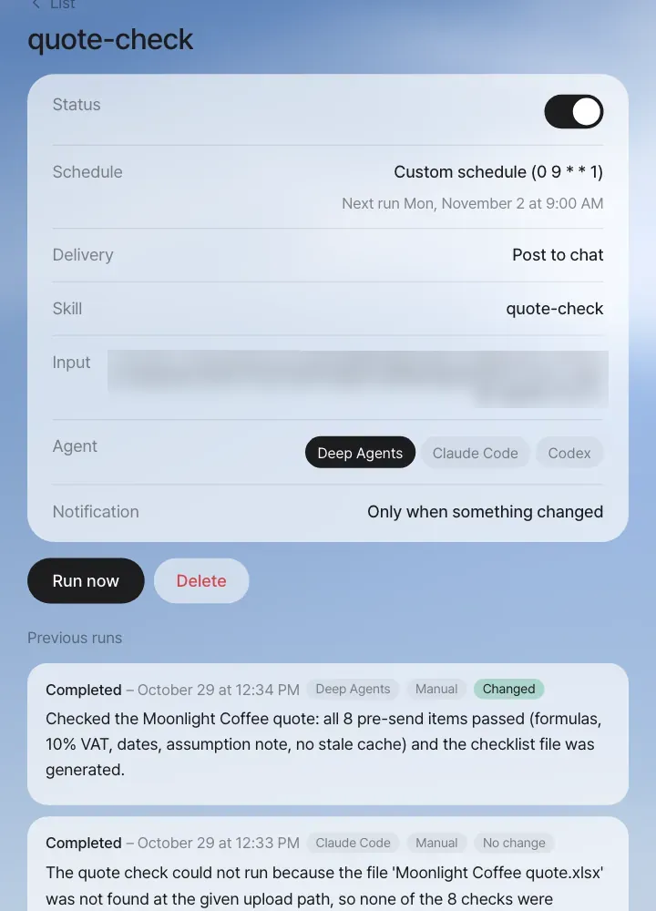

Connect outside services the assistant can use (Google, YouTube, Slack, GitHub and Notion), and create tasks that run at a set time just by saying something like "Every Monday at 9…". Scheduled tasks post to the chat only when something has changed since last time. For schedules made from a skill (missions), you manage running now, pausing, run history and which agent runs them.
In Chapter 10, you saved the quote check method as the quote-check skill. A skill runs only when you call it. In this chapter, you first connect outside services the assistant can use, and then make work run on its own at a set time.
Connections — outside services the assistant can use#
In Settings (the circle with your name at the top right) › Accounts, Connections has five services. Each card lists the tools the assistant gets to use.

| Service | How to connect | What it can do (tools) |
|---|---|---|
| YouTube | Nothing needed — public data | A channel's recent videos, video details, captions |
| Google (Gmail, Calendar, Drive) | Connect → agree in the Google sign-in. An admin must set up Google sign-in on the server first (Chapter 25) | Find, read and draft mail; find, create and change events; find and read Drive files |
| Slack | Paste a user token (xoxp-…) |
List channels, read channels, send messages |
| GitHub | Paste a Personal Access Token (repo scope) | Find issues, list PRs, create issues |
| Notion | Paste the internal integration secret and share the pages you want to use with that integration | Search, read and create pages, append to pages |
Tokens go in the Vault
A token you paste is encrypted and stored in that person's Vault (Chapter 6), and its value is never shown on screen or to the assistant (the AI model). When the assistant calls a tool, the server takes out the token of the person who called it and makes the call on their behalf. That's why the same question gets each person the results from their own account. If the assistant calls a tool for a service you haven't connected, it answers that a connection is needed.
This chapter uses examples that don't need personal account connections. Examples that use Google and Slack connections (putting events from new YouTube videos on the calendar, a weekly Slack summary) are in the integrations, skills and missions video.
Try it 1 — schedule it by saying so#
You want to keep track every week of the time left and the to-dos until Moonlight Coffee Store #2 opens. Type in chat:
Every Monday at 9 AM, tell me in three lines how many weeks are left until Moonlight Coffee Store #2 opens (March 2, 2027) and what to take care of this week.
When your message has words like "every, daily, weekly, monthly, on a schedule, recurring", the assistant doesn't do it right away and takes it as a schedule. A schedule chip is attached below the answer.

Check: The task name and next run time on the chip. The assistant names the task and writes the instruction it will run each time on its own (in our run: "I'll set a Monday 9 AM reminder that counts down the weeks to the March 2, 2027 opening and flags what to focus on that week.").
See the list and details in Settings › Scheduled tasks.

| Item | Meaning |
|---|---|
| Status | Pause and resume with the switch. While paused, it doesn't run at the set time |
| Schedule | The cycle in Korea Standard Time (KST) (minute hour day month weekday). 0 9 * * 1 = every Monday at 9:00 |
| Next run | The time it will actually run next |
| Delivery | Where the results go (Post to chat) |
| Run now | Runs it once without waiting for the time (marked Manual in the record) |
| Delete | Deletes the schedule |
| Previous runs | Each run's status (Completed or Failed), time and summary. Runs that posted results to the chat show Changed, and runs that passed quietly show No change |
Quiet when nothing has changed#
Each time a scheduled task runs, it runs with the condition "if nothing differs from what the last run shared, answer only 'No change'", and if the answer is "No change", nothing is left in the chat (not even a divider). If the previous run is still going, that run is skipped. This keeps the same content from piling up every day and making you miss the alerts that matter. Runs that passed quietly still show as No change under Previous runs on the details screen.
Failures don't pass quietly
It goes quiet only when it ran properly and nothing changed. If a run fails, the chat gets one line, "The scheduled run failed: …", a Scheduled run failed card appears on Home, and Previous runs records it as Failed. If the server or database didn't respond for a moment and the run couldn't even start, it runs again on its own a few minutes later.
Try it 2 — schedule a skill (mission)#
When you run a skill from Chapter 10 at a set time, it becomes a mission. Missions have more to manage than ordinary schedules.
Open quote-check in Settings › Skills, and below it there are schedule buttons (Every morning at 8 · Twice a day (12:00, 21:00) · Hourly during weekday market hours · Every Monday at 9). Choose Every Monday at 9, write the quote to check in the Input values (JSON) box (write it as {"name": "value"}, like the example in the box), and click Schedule Every Monday at 9. You can also choose the schedule when you save from the skill draft card.
When you open the mission in Settings › Scheduled tasks, it has more items than an ordinary schedule. Click Run now to try it right away.

A mission decides "whether anything changed" from a result line like the one below that the skill leaves on the last line of its answer. Every time the mission runs, it tells the assistant to leave this line. If there's no result line, a run that ended normally is still recorded as Completed, but since it can't tell whether anything changed, it's marked Unknown if changed and the notification is sent. It's Failed only when it ended with an error or gave no answer at all. In the shot above, both runs left a result line: the Deep Agents run checked the quote ("all 8 pre-send items passed …", Changed), and the Claude Code run found the skill but not the input file (No change, see the note below).
MISSION_RESULT: {"changed": true, "summary": "2 need checking — typo in the validity wording, stored value is the old total"}
| Result line item | Meaning |
|---|---|
changed |
true if there's something new worth reporting. If the notification is set to "Only when something changed", it's posted to the chat only when this is true |
summary |
One or two sentences left in the run record and the chat |
seen_add |
(Optional) IDs of the items handled this time. They're passed to the next run as seen, so the same item isn't handled twice |
Plan for scheduling when you make the skill
If you choose a schedule when saving from the skill draft card and SKILL.md has no result line, a "Scheduled run result" step is added on its own. If the skill is already saved, add that procedure through a variation as in Chapter 10, or add this when you make it: I'll run this as a scheduled mission. Make sure it always leaves one MISSION_RESULT line (changed, summary) at the end. The built-in youtube-schedule-to-calendar skill is an example that follows this format (it finds events in a YouTube channel's new videos and puts them on Google Calendar — needs a Google connection).
The status switch, Run now and Previous runs are the same as for ordinary schedules. Missions also have the following.
| Only in missions | What it does |
|---|---|
| Skill and input | The skill to run and the input values to pass |
| Agent | Who runs it: Deep Agents, Claude Code or Codex |
| Notification | Only when something changed / Every time / Don't send |
| Unknown if changed | In previous runs, marks runs that ended normally without a result line |
Claude Code and Codex get the skill, not your chat's files
A mission run by Claude Code or Codex gets the skill from its skill folder (the same files Deep Agents uses). But a file path from the chat, like the attached quote under /workspace/uploads/…, is in Deep Agents' work folder, which Claude Code and Codex runs can't see. That's why the Claude Code run in the shot answered that the file was not found. For those agents, give input they can reach (a link, or text in the input values), or keep the mission on Deep Agents.
Mission results go only to the person who set it up. That's because a skill is one person's work done by one agent. For work that several people do in turn (review, approval), you schedule a process instead of a mission. Say something like Start the SNS trend response process every Monday at 9, and a new process starts each time it runs, passing to the assignee at each step (you make processes in Chapter 17).
Next#
A scheduled mission reports its results to just you. In the next chapter, you'll see panel apps, small tables the team views and edits together, like a quote tracker, made with a single request (Chapter 12).
Check your understanding
- You made a schedule that summarizes a Slack channel, and the first run's result was "a connection is needed." What should you do?
- You set up a schedule to look at the quote tracker (the panel app you make in the next chapter) every day at 4 PM. On Wednesday, no quotes changed. What's left in the chat?
- You want to send the same results to Seoyeon Park too. Is widening the mission's notification scope the right move?
Answer
- In Settings › Accounts › Connections, click Connect on the Slack card and enter your own user token. A schedule runs with the connections of the person who set it up.
- Nothing. If nothing changed, the assistant answers "No change", and that run doesn't leave even a divider in the chat.
- No. Mission results go only to the person who set it up. If Seoyeon Park also needs to know, share the results through chat (@mention, Chapter 14), or if it's work several people do in turn, make it a process and schedule that.